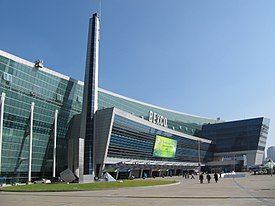

 벡스코 전시장은 단층 무주전시장으로서 3개의 홀로 분할 가능한 총 26,508m2의 제1전시장과 2012년 5월 완공한 19,872m2의 제2전시장으로 이루어져 총 실내 전시 면적이 46,380m2 규모로 20,000m2 이상의 대형국제행사를 동시에 2건 이상 개최할 수 있다. 또한, 최대 5,340명을 수용할 수 있는 컨벤션홀을 비롯하여 50개의 회의실과 2012년 완공한 4002석 규모의 오디토리움을 활용하여 총회, 세미나, 기업회의, 공연 등 다양한 유형의 행사를 개최할 수 있는 시설을 완비하고 있다. 현재까지 벡스코는 전 세계 13억 인구가 생중계로 지켜본 2002 한일 월드컵 본선 조추첨을 시작으로, 21개국 정상이 참가한 2005년 APEC 정상회의, 130개국에서 참가한 OECD 세계포럼, 제2전시장과 오디토리움 완공과 더불어 성공적으로 활용개최한 2012년 라이온스부산세계대회, 2014년 부산국제모터쇼, 2014년 ITU 전권회의, 2014년 한-아세안 특별정상회의, 2015년 IDB-IIC 연차총회, 2017년 ITU텔레매워드급 국제행사들을 개최해 오고 있다.
상상체험+레이싱키즈월드 시즌5
(사)부산관광마이스진흥회 제20차 이사회
2021 신구포 반도유보라아파트 입주박람회
2021년도 기술보증기금 실무능력평가 시험